University of Massachusetts Amherst
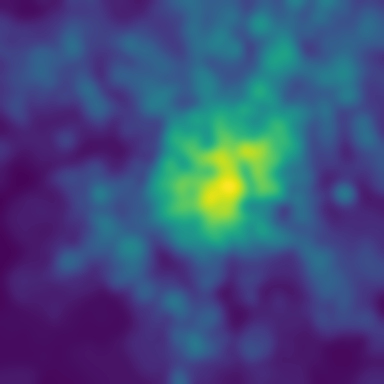
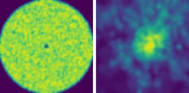
Uniform occupancy on the latent annulus (s = 0) is carried by the learned velocity field onto the Milano demand map (s = 1). With the no-fly penalty, mass flows around the dashed disc. 30,000 latent samples, seed 42.
An analytic path gives ergodicity for free. One map, learned once with flow matching, bends it onto any demand density, for any number of trajectories and agents, with a coverage bound you can read off the training loss.
Designing continuous trajectories whose time-averaged occupancy provably matches a prescribed spatial density (the ergodic coverage problem) is central to UAV-assisted data collection and sensing, robotic exploration, and mobile monitoring. For flying agents in particular, this challenge is acute: trajectories must balance coverage fidelity against tight energy budgets, no-fly zones, and acceleration limits. Existing methods either re-optimize each trajectory online (with cost growing in the horizon and re-running for every target, agent, and realization) or rely on bespoke analytical constructions that must be re-derived for each new constraint. We propose a pushforward framework that decouples ergodicity from density matching: an analytic latent trajectory provides exact uniform ergodicity on a simple annular domain, and a single map, learned offline by optimal-transport conditional flow matching, transports this latent occupancy onto the prescribed target density. The composed trajectory is then asymptotically ergodic with respect to the learned pushforward distribution, with deviation from the target controlled by the flow-matching training loss. Once trained for a given target density and constraint set, the map serves an unbounded number of trajectories and a multi-agent fleet without per-agent retraining, and many differentiable operational constraints (no-fly zones, acceleration ceilings, or fairness penalties) enter as additive soft penalties in the training loss without re-deriving the design. We prove three results (an acceleration-energy bound, an $O(1/\sqrt{K})$ ergodic convergence rate in the number of trajectory cycles $K$, and an approximation-error bound) that combine into an end-to-end coverage bound estimable from CFM training diagnostics (certified given an architectural Lipschitz bound on $v_\theta$). Experiments on synthetic targets empirically support each theoretical envelope; on a real UAV-coverage dataset, the proposed method gives the strongest observed coverage–energy and coverage–constraint tradeoffs among the evaluated time-warping, optimization, and concurrent flow-matching baselines.
A UAV serving a city should spend time where demand is high: the fraction of time it spends in any region should match that region's share of the demand. Existing planners pay for this again and again.
A new target, trajectory or agent means solving a new optimization problem.
Fast and provable, but every new constraint needs its own derivation.
Reusable policies, but no long-run guarantee on where time is spent.
Can the density transformation be learned once and reused?
Radial back-and-forth sweeps on the annulus $D_\delta$, one random direction per cycle. Uniform and ergodic by construction.
Trained once, offline, with optimal-transport conditional flow matching. Shared by every trajectory and agent.
Follows the target demand. A new trajectory or agent costs one forward pass.
Square-root radial speed sweeps equal area per unit time, so $z(t)$ is uniform on the annulus. Ergodicity then transfers through any map: if $z(t)$ is ergodic for $\pi_0$, then $G(z(t))$ is ergodic for $G_\#\pi_0$.
$\mathcal L_{\rm CFM}=\mathbb E\,\|v_\theta(s,y_s)-(x_1-z_0)\|^2$ with OT-coupled pairs, so the flow paths are nearly straight. A new constraint is one more differentiable loss term; no re-derivation.
The analytic part guarantees coverage; the learned part fits the target geometry.
Acceleration energy of the UAV path is the latent energy, stretched by the map, plus the curvature the map adds.
Cycles are i.i.d., so coverage error shrinks as $1/\sqrt K$ with no mixing-time analysis. Measured slope $-0.48$ vs. $-0.50$ predicted.
The map's error is controlled by the velocity error, i.e. the training loss. Better training gives a provably closer coverage distribution.
Experiment 1 · density matching. A learned map turns uniform latent coverage into a two-mode Gaussian mixture.
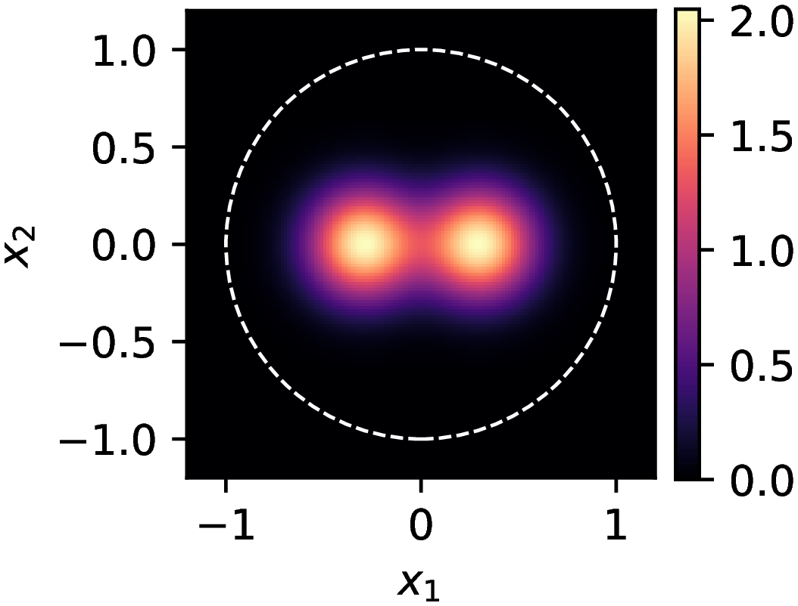
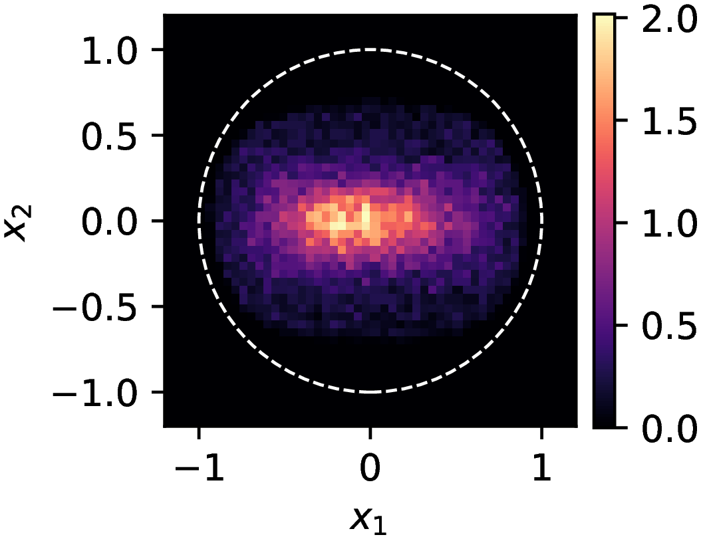
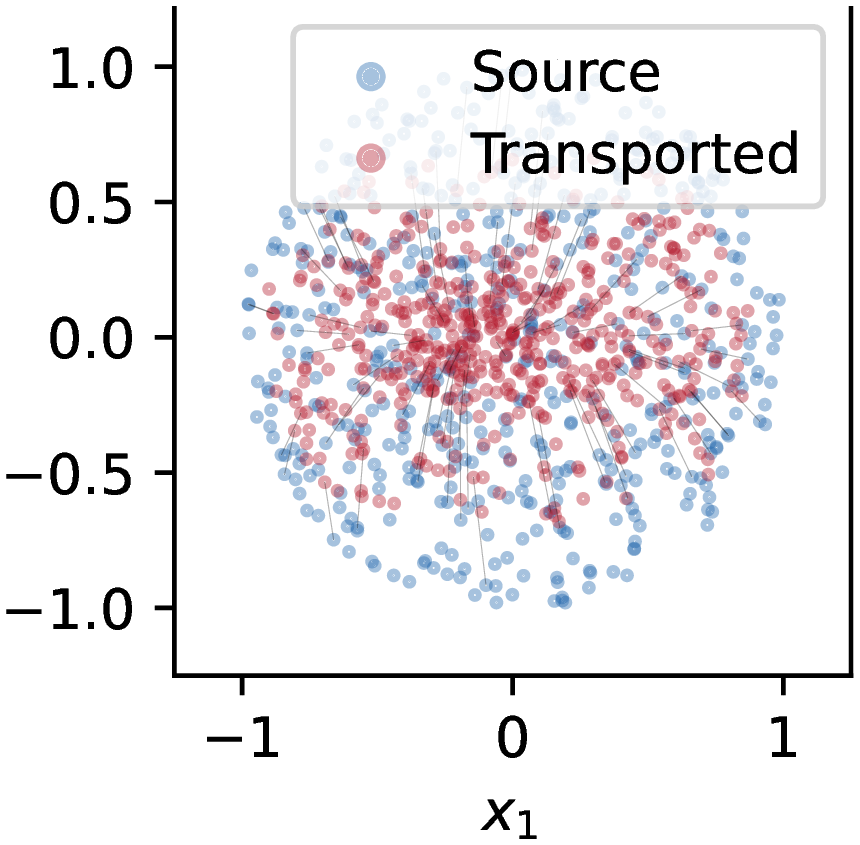
Experiment 2 · demand-proportional allocation. On a binary 3:1 target, time is split 75/25 as asked.
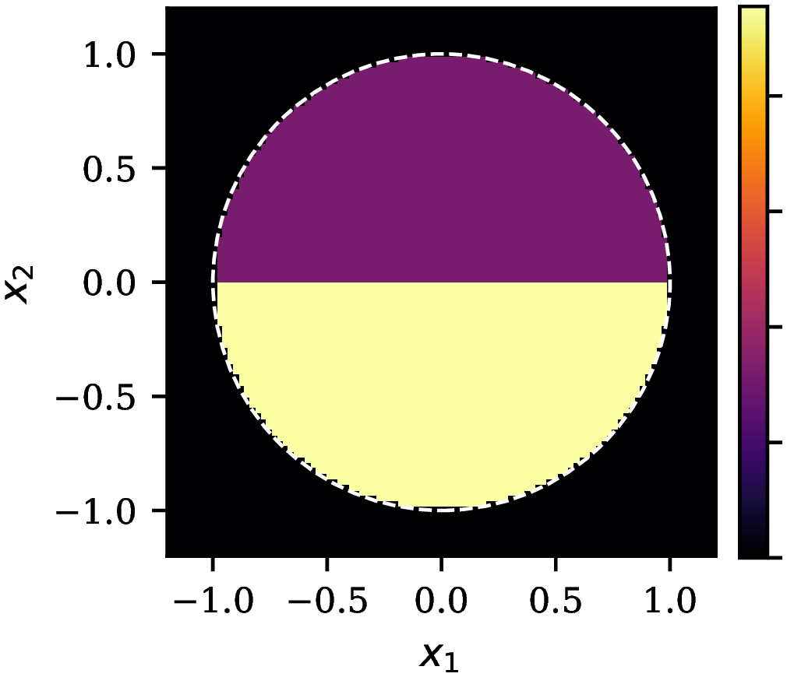
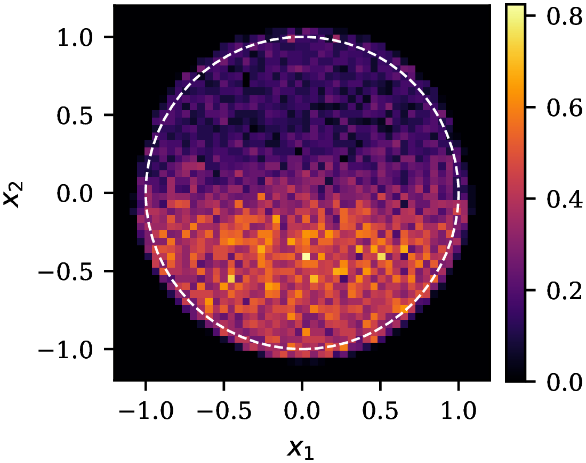
Experiment 3 · constraints as loss terms. Each penalty buys its constraint at a visible cost in coverage, a Pareto frontier over $(\lambda_{\rm nfz},\lambda_{\rm acc})$.
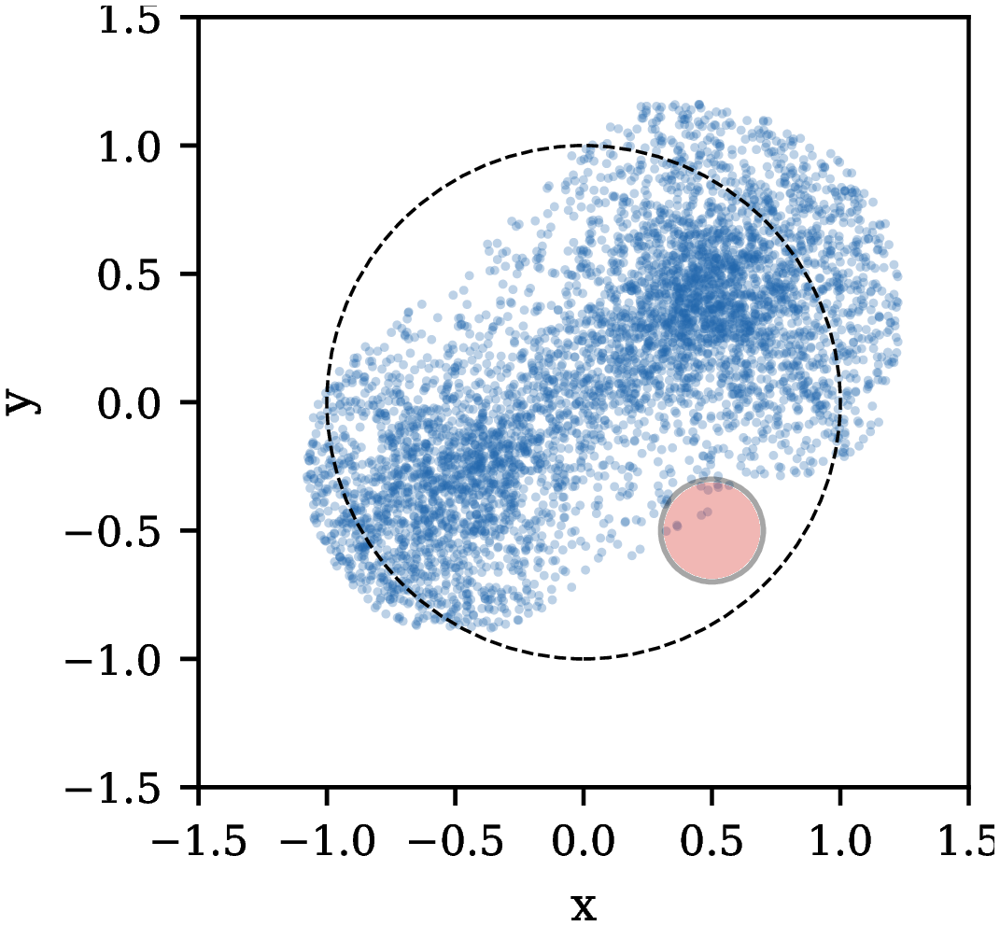
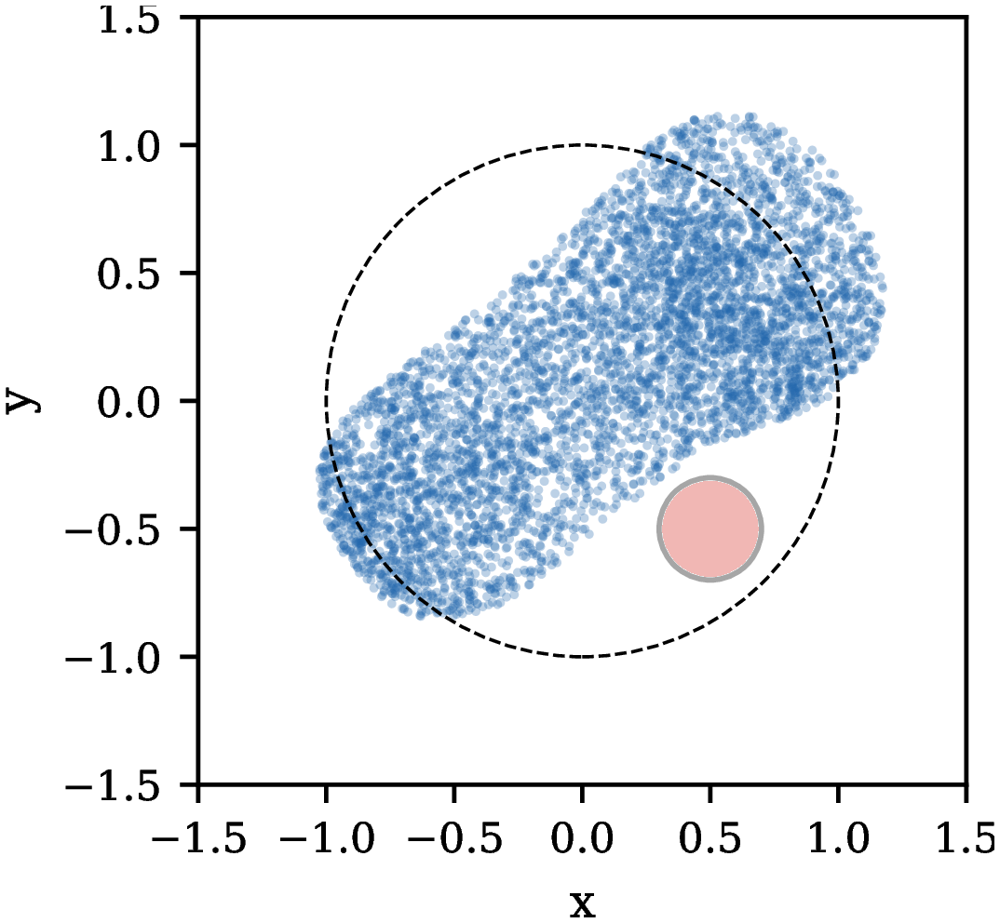
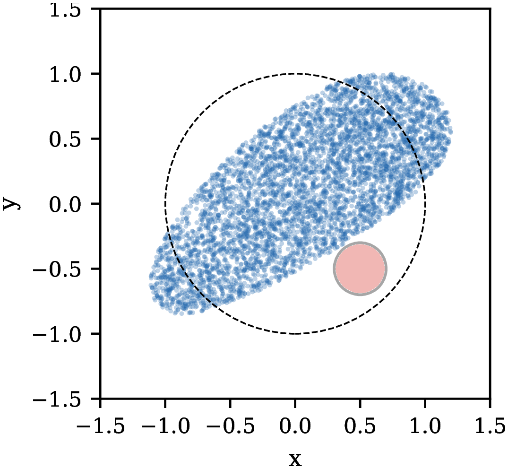
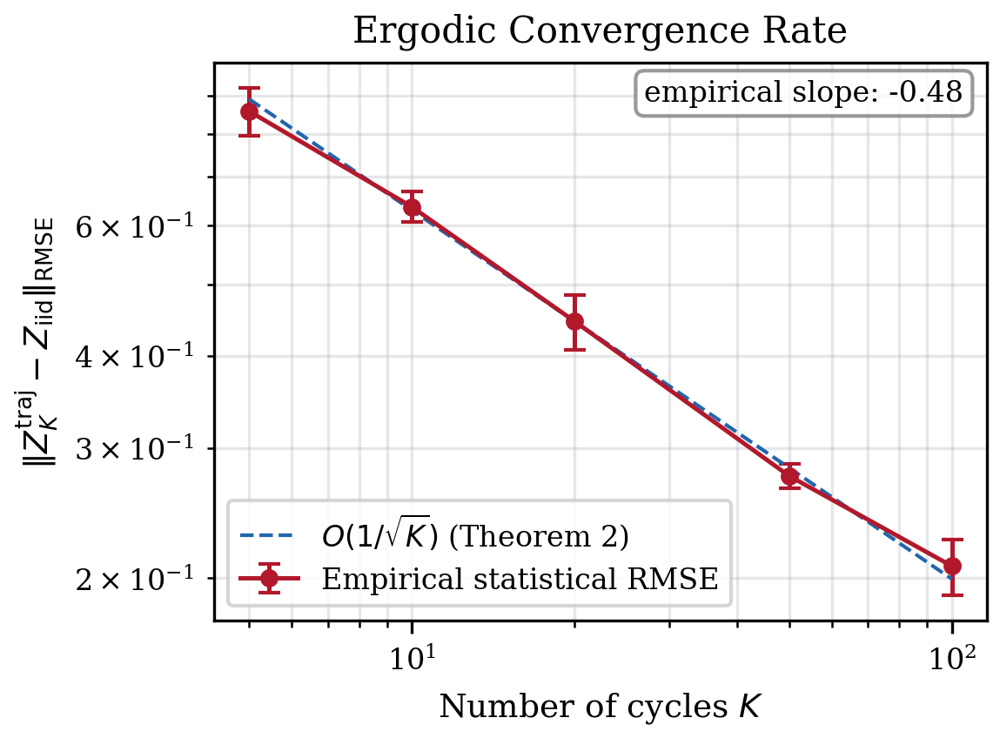
The Hoeffding prediction $\sigma/\sqrt K\approx0.085$ at $K=300$ envelopes the observed residual of about $0.05$. The Experiment 2 acceleration ratio $0.71\times$ sits inside the energy envelope, and the plug-in floor $e^{\hat L_v}\varepsilon_v$ envelopes the measured $\hat W_2$.
Demand from the Milano mobile-traffic dataset, two no-fly configurations (one disc, 1D; four discs, MD), six baselines and six variants of our method that differ only in the penalty term. Mean over 3 seeds.
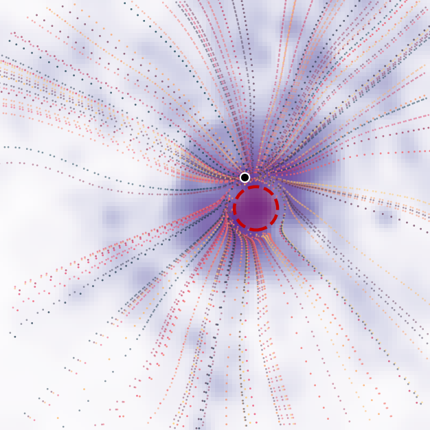
| coverage $\rho$ ↑ | mean power $\bar P$ (W) ↓ | NFZ time (%) ↓ | ||||
|---|---|---|---|---|---|---|
| Method | 1D | MD | 1D | MD | 1D | MD |
| TOES† | 0.286 | 0.265 | 160 | 160 | 1.44 | 0 |
| Time-warp | 0.690 | 0.862 | 532 | 555 | 9.11 | 1.03 |
| Static OT | 0.575 | 0.570 | 1.0·10⁴ | 1.05·10⁴ | 3.25 | 4.20 |
| SAC | 0.395 | 0.228 | 2.55·10⁴ | 1.98·10⁴ | 5.23 | 35.0 |
| FMEC-Stein† | −0.119 | −0.094 | 164 | 164 | 0 | 0 |
| FMEC-Sinkhorn† | −0.080 | −0.065 | 166 | 166 | 0 | 0 |
| OT-CFM | 0.839 | 0.908 | 2.12·10³ | 2.38·10³ | 2.27 | 1.56 |
| OT-CFM +NFZ | 0.865 | 0.911 | 2.23·10³ | 2.24·10³ | 0.011 | 0.189 |
| OT-CFM +E | 0.646 | 0.737 | 510 | 514 | 5.98 | 13.2 |
| OT-CFM +A | 0.410 | 0.430 | 1.02·10³ | 1.04·10³ | 5.10 | 16.4 |
| OT-CFM +NFZ+E | 0.572 | 0.230 | 819 | 1.68·10³ | 0.011 | 11.9 |
| OT-CFM +NEA‡ | 0.104 | 0.188 | 645 | 457 | 0.102 | 0.032 |
Bold: best per column among coverage-competitive methods ($\rho\ge0.5$). †Low power and zero NFZ time occur together with degenerate coverage ($\rho\le0.29$), so they should not be read as energy efficiency or constraint satisfaction. ‡Low violation at degraded coverage. Standard deviations and the full metric set are in the paper (Table 1 and appendix).
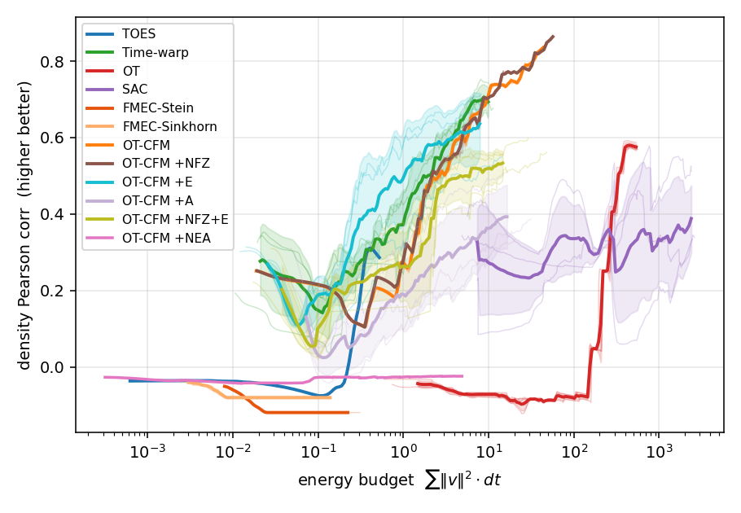
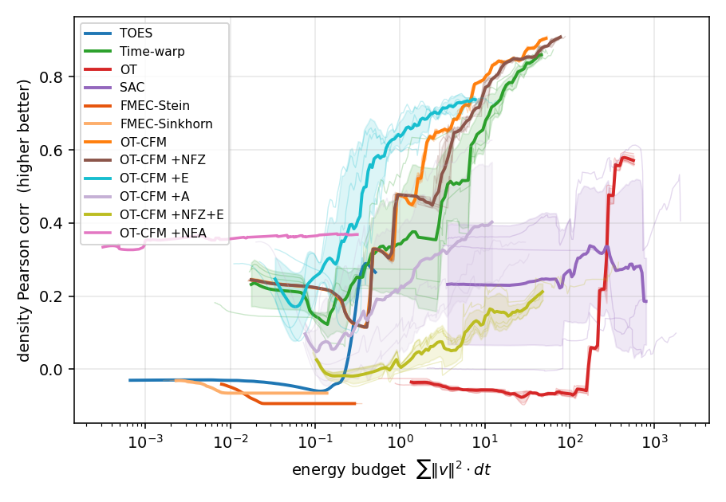
Training is paid once. Every additional trajectory or agent costs a single forward pass through $v_\theta$.
@inproceedings{aghazadeh2026ergodic,
title = {Ergodic Trajectory Design by Learned Pushforward Maps:
Provable Coverage via Conditional Flow Matching},
author = {Aghazadeh, Ehsan and Malekzadeh, Masoud and
Ghasemi, Ahmad and Pishro-Nik, Hossein},
booktitle = {Advances in Neural Information Processing Systems (NeurIPS)},
year = {2026},
eprint = {2605.13063},
archivePrefix = {arXiv}
}